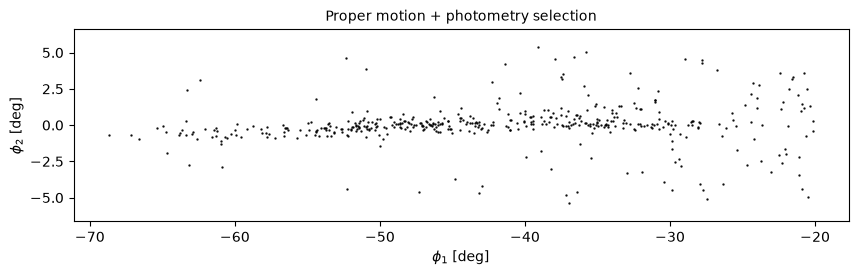
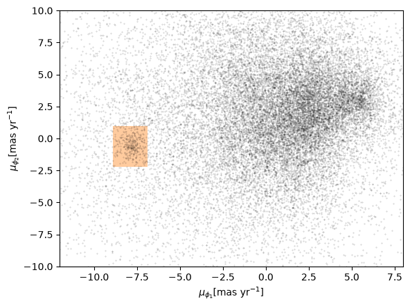
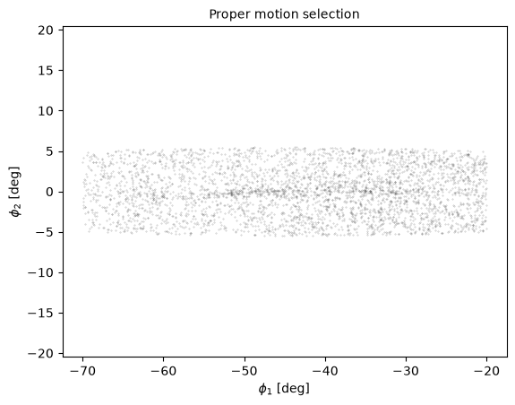
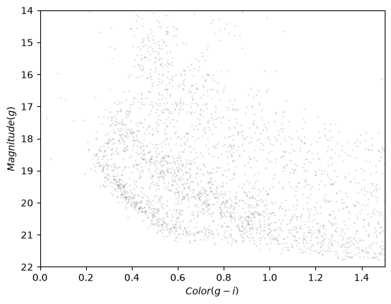
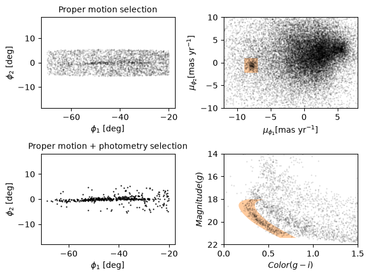
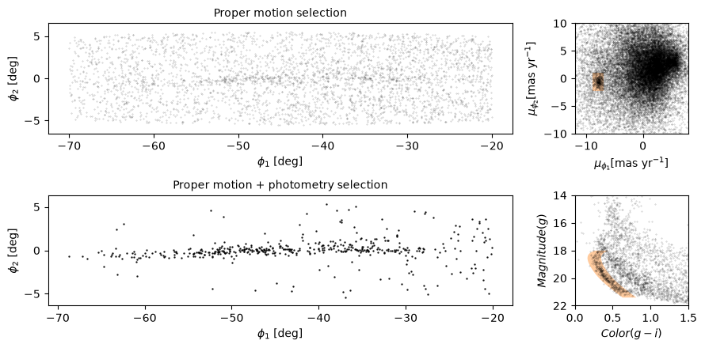

7. Visualization#
Click here to run this notebook on Colab. For the exercises, use the version with blanks.
This is the seventh in a series of notebooks related to astronomy data.
As a continuing example, we will replicate part of the analysis in a 2018 paper, “Off the beaten path: Gaia reveals GD-1 stars outside of the main stream” by Adrian M. Price-Whelan and Ana Bonaca.
In the previous notebook we selected photometry data from Pan-STARRS and used it to identify stars we think are likely to be in GD-1
In this notebook, we’ll take the results from previous lessons and use them to make a figure that tells a compelling scientific story.
Outline#
Here are the steps in this notebook:
Starting with the figure from the previous notebook, we’ll add annotations to present the results more clearly.
The we’ll see several ways to customize figures to make them more appealing and effective.
Finally, we’ll see how to make a figure with multiple panels or subplots.
After completing this lesson, you should be able to
Design a figure that tells a compelling story.
Use Matplotlib features to customize the appearance of figures.
Generate a figure with multiple subplots.
Making Figures That Tell a Story#
So far the figures we’ve made have been “quick and dirty”. Mostly we have used Matplotlib’s default style, although we have adjusted a few parameters, like markersize and alpha, to improve legibility.
Now that the analysis is done, it’s time to think more about:
Making professional-looking figures that are ready for publication, and
Making figures that communicate a scientific result clearly and compellingly.
Not necessarily in that order.
Let’s start by reviewing Figure 1 from the original paper. We’ve seen the individual panels, but now let’s look at the whole thing, along with the caption:

Exercise#
Think about the following questions:
What is the primary scientific result of this work?
What story is this figure telling?
In the design of this figure, can you identify 1-2 choices the authors made that you think are effective? Think about big-picture elements, like the number of panels and how they are arranged, as well as details like the choice of typeface.
Can you identify 1-2 elements that could be improved, or that you might have done differently?
Plotting GD-1#
Let’s start with the panel in the lower left. You can download the data from the previous lesson or run the following cell, which downloads it if necessary.
from os.path import basename, exists
def download(url):
filename = basename(url)
if not exists(filename):
from urllib.request import urlretrieve
local, _ = urlretrieve(url, filename)
print('Downloaded ' + local)
download('https://github.com/AllenDowney/AstronomicalData/raw/main/' +
'data/gd1_data.hdf')
Now we can reload winner_df
import pandas as pd
filename = 'gd1_data.hdf'
winner_df = pd.read_hdf(filename, 'winner_df')
import matplotlib.pyplot as plt
def plot_second_selection(df):
x = df['phi1']
y = df['phi2']
plt.plot(x, y, 'ko', markersize=0.7, alpha=0.9)
plt.xlabel(r'$\phi_1$ [deg]')
plt.ylabel(r'$\phi_2$ [deg]')
plt.title('Proper motion + photometry selection', fontsize='medium')
plt.axis('equal')
And here’s what it looks like.
plt.figure(figsize=(10,2.5))
plot_second_selection(winner_df)

Annotations#
The figure in the paper uses three other features to present the results more clearly and compellingly:
A vertical dashed line to distinguish the previously undetected region of GD-1,
A label that identifies the new region, and
Several annotations that combine text and arrows to identify features of GD-1.
Exercise#
Choose any or all of these features and add them to the figure:
To draw vertical lines, see
plt.vlinesandplt.axvline.To add text, see
plt.text.To add an annotation with text and an arrow, see plt.annotate.
And here is some additional information about text and arrows.
Customization#
Matplotlib provides a default style that determines things like the colors of lines, the placement of labels and ticks on the axes, and many other properties.
There are several ways to override these defaults and customize your figures:
To customize only the current figure, you can call functions like
tick_params, which we’ll demonstrate below.To customize all figures in a notebook, you use
rcParams.To override more than a few defaults at the same time, you can use a style sheet.
As a simple example, notice that Matplotlib puts ticks on the outside of the figures by default, and only on the left and bottom sides of the axes.
To change this behavior, you can use gca() to get the current axes and tick_params to change the settings.
Here’s how you can put the ticks on the inside of the figure:
plt.gca().tick_params(direction='in')
Exercise#
Read the documentation of tick_params and use it to put ticks on the top and right sides of the axes.
rcParams#
If you want to make a customization that applies to all figures in a notebook, you can use rcParams.
Here’s an example that reads the current font size from rcParams:
plt.rcParams['font.size']
10.0
And sets it to a new value:
plt.rcParams['font.size'] = 14
As an exercise, plot the previous figure again, and see what font sizes have changed. Look up any other element of rcParams, change its value, and check the effect on the figure.
If you find yourself making the same customizations in several notebooks, you can put changes to rcParams in a matplotlibrc file, which you can read about here.
Style sheets#
The matplotlibrc file is read when you import Matplotlib, so it is not easy to switch from one set of options to another.
The solution to this problem is style sheets, which you can read about here.
Matplotlib provides a set of predefined style sheets, or you can make your own.
The following cell displays a list of style sheets installed on your system.
plt.style.available
['Solarize_Light2',
'bmh',
'classic',
'dark_background',
'fast',
'fivethirtyeight',
'ggplot',
'grayscale',
'petroff10',
'petroff6',
'petroff8',
'seaborn-v0_8',
'seaborn-v0_8-bright',
'seaborn-v0_8-colorblind',
'seaborn-v0_8-dark',
'seaborn-v0_8-dark-palette',
'seaborn-v0_8-darkgrid',
'seaborn-v0_8-deep',
'seaborn-v0_8-muted',
'seaborn-v0_8-notebook',
'seaborn-v0_8-paper',
'seaborn-v0_8-pastel',
'seaborn-v0_8-poster',
'seaborn-v0_8-talk',
'seaborn-v0_8-ticks',
'seaborn-v0_8-white',
'seaborn-v0_8-whitegrid',
'tableau-colorblind10',
'traffic']
Note that seaborn-v0_8-paper, seaborn-v0_8-talk and seaborn-v0_8-poster are particularly intended to prepare versions of a figure with text sizes and other features that work well in papers, talks, and posters.
To use any of these style sheets, run plt.style.use like this:
plt.style.use('fivethirtyeight')
The style sheet you choose will affect the appearance of all figures you plot after calling use, unless you override any of the options or call use again.
As an exercise, choose one of the styles on the list and select it by calling use. Then go back and plot one of the figures above and see what effect it has.
If you can’t find a style sheet that’s exactly what you want, you can make your own. This repository includes a style sheet called az-paper-twocol.mplstyle, with customizations chosen by Azalee Bostroem for publication in astronomy journals.
You can download the style sheet or run the following cell, which downloads it if necessary.
download('https://github.com/AllenDowney/AstronomicalData/raw/main/' +
'az-paper-twocol.mplstyle')
Downloaded az-paper-twocol.mplstyle
You can use it like this:
plt.style.use('./az-paper-twocol.mplstyle')
The prefix ./ tells Matplotlib to look for the file in the current directory.
As an alternative, you can install a style sheet for your own use by putting it in your configuration directory. To find out where that is, you can run the following command:
import matplotlib as mpl
mpl.get_configdir()
LaTeX fonts#
When you include mathematical expressions in titles, labels, and annotations, Matplotlib uses mathtext to typeset them. mathtext uses the same syntax as LaTeX, but it provides only a subset of its features.
If you need features that are not provided by mathtext, or you prefer the way LaTeX typesets mathematical expressions, you can customize Matplotlib to use LaTeX.
In matplotlibrc or in a style sheet, you can add the following line:
text.usetex : true
Or in a notebook you can run the following code.
plt.rcParams['text.usetex'] = True
plt.rcParams['text.usetex'] = True
If you go back and draw the figure again, you should see the difference.
If you get an error message like
LaTeX Error: File `type1cm.sty' not found.
You might have to install a package that contains the fonts LaTeX needs. On some systems, the packages texlive-latex-extra or cm-super might be what you need. See here for more help with this.
In case you are curious, cm stands for Computer Modern, the font LaTeX uses to typeset math.
Before we go on, let’s put things back where we found them.
plt.rcParams['text.usetex'] = False
plt.style.use('default')
Multiple panels#
So far we’ve been working with one figure at a time, but the figure we are replicating contains multiple panels, also known as “subplots”.
Confusingly, Matplotlib provides three functions for making figures like this: subplot, subplots, and subplot2grid.
subplotis simple and similar to MATLAB, so if you are familiar with that interface, you might likesubplotsubplotsis more object-oriented, which some people prefer.subplot2gridis most convenient if you want to control the relative sizes of the subplots.
So we’ll use subplot2grid.
All of these functions are easier to use if we put the code that generates each panel in a function.
Upper right#
To make the panel in the upper right, we have to reload centerline_df.
filename = 'gd1_data.hdf'
centerline_df = pd.read_hdf(filename, 'centerline_df')
And define the coordinates of the rectangle we selected.
pm1_min = -8.9
pm1_max = -6.9
pm2_min = -2.2
pm2_max = 1.0
pm1_rect = [pm1_min, pm1_min, pm1_max, pm1_max]
pm2_rect = [pm2_min, pm2_max, pm2_max, pm2_min]
To plot this rectangle, we’ll use a feature we have not seen before: Polygon, which is provided by Matplotlib.
To create a Polygon, we have to put the coordinates in an array with x values in the first column and y values in the second column.
import numpy as np
np.set_printoptions(legacy='1.25')
vertices = np.transpose([pm1_rect, pm2_rect])
vertices
array([[-8.9, -2.2],
[-8.9, 1. ],
[-6.9, 1. ],
[-6.9, -2.2]])
The following function takes a DataFrame as a parameter, plots the proper motion for each star, and adds a shaded Polygon to show the region we selected.
from matplotlib.patches import Polygon
def plot_proper_motion(df):
pm1 = df['pm_phi1']
pm2 = df['pm_phi2']
plt.plot(pm1, pm2, 'ko', markersize=0.3, alpha=0.3)
poly = Polygon(vertices, closed=True,
facecolor='C1', alpha=0.4)
plt.gca().add_patch(poly)
plt.xlabel(r'$\mu_{\phi_1} [\mathrm{mas~yr}^{-1}]$')
plt.ylabel(r'$\mu_{\phi_2} [\mathrm{mas~yr}^{-1}]$')
plt.xlim(-12, 8)
plt.ylim(-10, 10)
Notice that add_patch is like invert_yaxis; in order to call it, we have to use gca to get the current axes.
Here’s what the new version of the figure looks like. We’ve changed the labels on the axes to be consistent with the paper.
plot_proper_motion(centerline_df)

Upper left#
Now let’s work on the panel in the upper left. We have to reload candidates.
filename = 'gd1_data.hdf'
candidate_df = pd.read_hdf(filename, 'candidate_df')
Here’s a function that takes a DataFrame of candidate stars and plots their positions in GD-1 coordinates.
def plot_first_selection(df):
x = df['phi1']
y = df['phi2']
plt.plot(x, y, 'ko', markersize=0.3, alpha=0.3)
plt.xlabel(r'$\phi_1$ [deg]')
plt.ylabel(r'$\phi_2$ [deg]')
plt.title('Proper motion selection', fontsize='medium')
plt.axis('equal')
And here’s what it looks like.
plot_first_selection(candidate_df)

Lower right#
For the figure in the lower right, we’ll use this function to plots the color-magnitude diagram.
import matplotlib.pyplot as plt
def plot_cmd(table):
"""Plot a color magnitude diagram.
table: Table or DataFrame with photometry data
"""
y = table['g_mean_psf_mag']
x = table['g_mean_psf_mag'] - table['i_mean_psf_mag']
plt.plot(x, y, 'ko', markersize=0.3, alpha=0.3)
plt.xlim([0, 1.5])
plt.ylim([14, 22])
plt.gca().invert_yaxis()
plt.ylabel('$Magnitude (g)$')
plt.xlabel('$Color (g-i)$')
Here’s what it looks like.
plot_cmd(candidate_df)

And here’s how we read it back.
filename = 'gd1_data.hdf'
loop_df = pd.read_hdf(filename, 'loop_df')
loop_df.head()
| color_loop | mag_loop | |
|---|---|---|
| 0 | 0.632171 | 21.411746 |
| 1 | 0.610238 | 21.322466 |
| 2 | 0.588449 | 21.233380 |
| 3 | 0.566924 | 21.144427 |
| 4 | 0.545461 | 21.054549 |
Exercise#
Add a few lines to plot_cmd to show the polygon we selected as a shaded area.
Hint: pass coords as an argument to Polygon and plot it using add_patch.
Subplots#
Now we’re ready to put it all together. To make a figure with four subplots, we’ll use subplot2grid, which requires two arguments:
shape, which is a tuple with the number of rows and columns in the grid, andloc, which is a tuple identifying the location in the grid we’re about to fill.
In this example, shape is (2, 2) to create two rows and two columns.
For the first panel, loc is (0, 0), which indicates row 0 and column 0, which is the upper-left panel.
Here’s how we use it to draw the four panels.
shape = (2, 2)
plt.subplot2grid(shape, (0, 0))
plot_first_selection(candidate_df)
plt.subplot2grid(shape, (0, 1))
plot_proper_motion(centerline_df)
plt.subplot2grid(shape, (1, 0))
plot_second_selection(winner_df)
plt.subplot2grid(shape, (1, 1))
plot_cmd(candidate_df)
poly = Polygon(loop_df, closed=True,
facecolor='C1', alpha=0.4)
plt.gca().add_patch(poly)
plt.tight_layout()

We use plt.tight_layout at the end, which adjusts the sizes of the panels to make sure the titles and axis labels don’t overlap.
As an exercise, see what happens if you leave out tight_layout.
Adjusting proportions#
In the previous figure, the panels are all the same size. To get a better view of GD-1, we’d like to stretch the panels on the left and compress the ones on the right.
To do that, we’ll use the colspan argument to make a panel that spans multiple columns in the grid.
In the following example, shape is (2, 4), which means 2 rows and 4 columns.
The panels on the left span three columns, so they are three times wider than the panels on the right.
At the same time, we use figsize to adjust the aspect ratio of the whole figure.
plt.figure(figsize=(9, 4.5))
shape = (2, 4)
plt.subplot2grid(shape, (0, 0), colspan=3)
plot_first_selection(candidate_df)
plt.subplot2grid(shape, (0, 3))
plot_proper_motion(centerline_df)
plt.subplot2grid(shape, (1, 0), colspan=3)
plot_second_selection(winner_df)
plt.subplot2grid(shape, (1, 3))
plot_cmd(candidate_df)
poly = Polygon(loop_df, closed=True,
facecolor='C1', alpha=0.4)
plt.gca().add_patch(poly)
plt.tight_layout()

This is looking more and more like the figure in the paper.
Exercise#
In this example, the ratio of the widths of the panels is 3:1. How would you adjust it if you wanted the ratio to be 3:2?
Summary#
In this notebook, we reverse-engineered the figure we’ve been replicating, identifying elements that seem effective and others that could be improved.
We explored features Matplotlib provides for adding annotations to figures – including text, lines, arrows, and polygons – and several ways to customize the appearance of figures. And we learned how to create figures that contain multiple panels.
Best practices#
The most effective figures focus on telling a single story clearly and compellingly.
Consider using annotations to guide the reader’s attention to the most important elements of a figure.
The default Matplotlib style generates good quality figures, but there are several ways you can override the defaults.
If you find yourself making the same customizations on several projects, you might want to create your own style sheet.
Copyright 2020–2026 Allen Downey
Code license: MIT License
Text license: Creative Commons Attribution 4.0 International